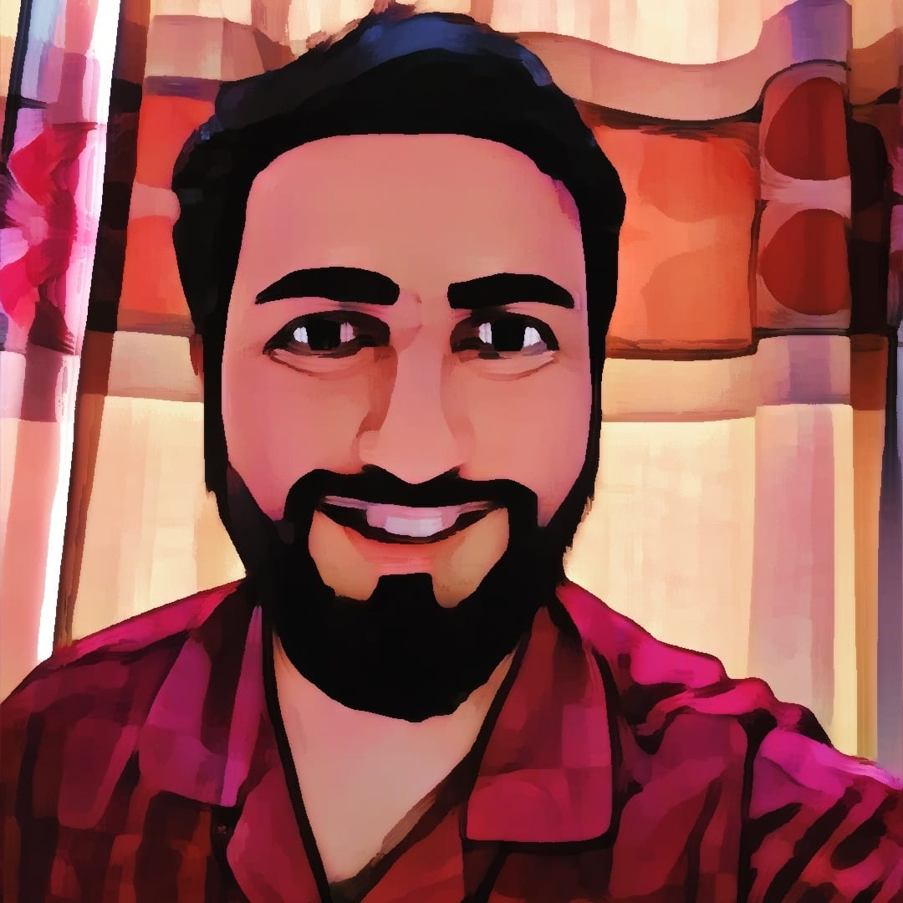
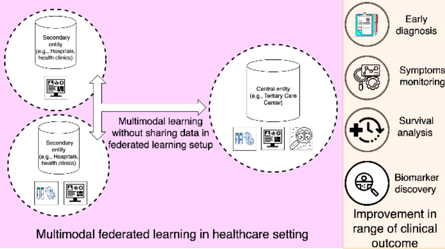
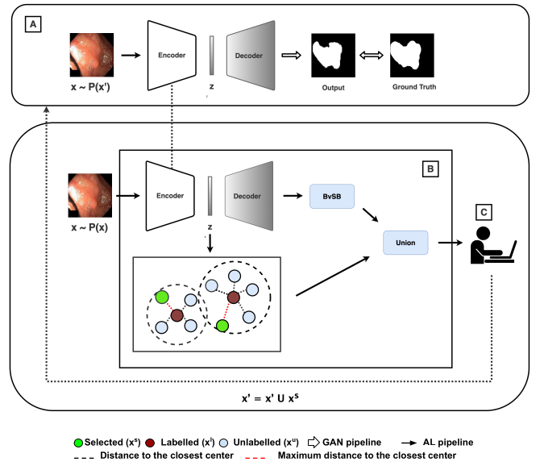
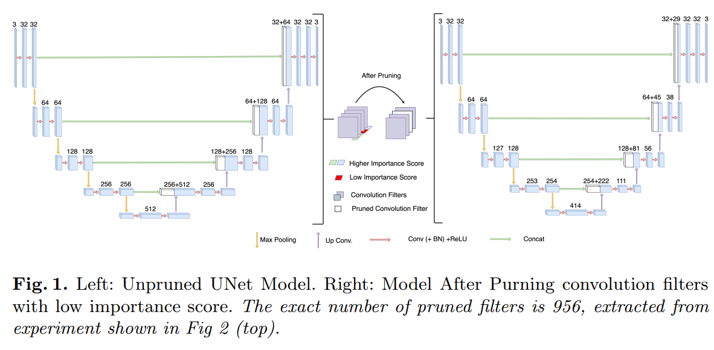

|
Pranav Poudel I am working as Computer Vision Engineer at Fogsphere(Redev AI) Ltd..Parallelly, I'm also part-time Research Assistant supervised by Prof Binod Bhattarai at Multimodal Learning Lab. I also closely collaborate with Prof Prashnna K Gyawali. I hold a Bachelor's Degree in Computer Engineering from Institue of Engineering, Pulchowk Campus, Tribhuvan University. At Fogsphere, I have worked on object detection and tracking, active learning, and I am currently focused on multi-modal large language models (LLM) at the edge. Email / CV / Scholar / LinkedIn / Github I am actively seeking PhD positions to conduct CV/ML research starting Spring/Fall 2025. Please feel free to reach out in any case via email or linkedin. |
 |
{kind=link}
ResearchI'm interested in Computer Vision, Multi-modal learning and Data-centric AI in Medical Imaging. |

|
CAR-MFL: Cross-Modal Augmentation by Retrieval for Multimodal Federated Learning with Missing Modalities
Pranav Poudel, Prashant Shrestha*, Sanskar Amagain*, Yash Raj Shrestha, Prashnna Gyawali, Prashnna Gyawali, Binod Bhattarai, The International Conference on Medical Image Computing and Computer Assisted Interventions (MICCAI), 2024 code / arXiv CAR-MFL addresses missing data in multimodal federated learning systems by using public datasets. It pairs a query image with similar images and their associated text from the public dataset to create complete multimodal inputs. |
|

|
Multimodal Federated Learning in Healthcare: a review
Jacob Thrasher, Alina Devkota, Prasiddha Siwakotai, Rohit Chivukula, Pranav Poudel, Chaunbo Hu, Binod Bhattarai Prashnna Gyawali preprint, arXiv A Survey Paper on Multi-modal Federated Learning in Healthcare domain. |
|

|
Task-Aware Active Learning for Endoscopic Polyp Segmentation
Pranav Poudel*, Shrawan Kumar Thapa*, Sudarshan Regmi, Binod Bhattarai Danail Stoyanov MICCAI Workshop on Data Engineering in Medical Imaging, 2024 code / pdf We propose a task-aware active learning pipeline that considers the uncertainty that the current task model exhibits for a given unlabelled example as well as the diversity in the composition of the acquired pool in the feature space of the model for Endoscopic Polyp Segmentation |
|

|
Neural Network Pruning for Real-time Polyp Segmentation
Suman Sapkote, Pranav Poudel, Sudarshan Regmi, Bibek Panthi, Binod Bhattarai Annual Conference on Medical Image Understanding and Analysis (MIUA), 2023 arXiv We applied neural network pruning to polyp segmentation by using Taylor First Order approximation to compute the importance scores of convolutional filters and removing the least important ones. |
|
|
CholecTriplet2022: Show me a tool and tell me the triplet -- an endoscopic vision challenge for surgical action triplet detection
Chinedu Innocent Nwoye, ..., Pranav Poudel ,...,Nicolas Padoy Medical Image Analysis(MedAI), 2023 arXiv |